Propuesta 2027 · Hospital de RiosucioMás de 300 mensajes semanales para citas & un solo equipo que los atiende.
Un asistente con IA que recibe las solicitudes por WhatsApp a cualquier hora, y un call center en la nube para las mismas 13 líneas. Todo desde el navegador, con un solo soporte.
Una jornada en el hospital & dónde entra cada servicio.
El estudio previo del hospital para 2026 habla de más de 300 mensajes semanales para citas por WhatsApp. A eso se suman las llamadas a las líneas virtuales y a la línea gratuita 01 8000.
Citas y atención con trazabilidad
Solicitudes por WhatsApp a cualquier hora, confirmación y recordatorio, etiquetas por motivo (PQRS, información, autorizaciones) y el historial completo de cada caso.
Menos infraestructura que mantener
API oficial de Meta con el número del hospital, nada que instalar en servidores propios y licencias para agentes, supervisión y administración.
Un contrato claro y datos para decidir
Valor fijo anual, telefonía por consumo, gerente de cuenta e informe mensual de citas, mensajes, llamadas y tiempos de respuesta.
WhatsApp con IA & citas confirmadas por el paciente.
Pruebe el recorrido de un paciente en el simulador. Al lado verá lo que pasa en el hospital en cada paso.
Línea en la API oficial de Meta, con el número verificado del hospital. Somos Meta Business Partner.
Asistente con IA que informa horarios y servicios, responde preguntas frecuentes y recibe la solicitud de cita, solo con la información que el hospital defina.
Toma documento, especialidad y tipo de cita. El equipo asigna; el paciente recibe fecha, hora, la indicación de llegar 15 minutos antes y la petición de confirmar.
Bandeja multiagente con WhatsApp, Messenger, Instagram y chat web, y paso a un asesor cuando el paciente lo pide.
Plan de 1.100 conversaciones al mes. Una conversación es la ventana de 24 horas que se abre con un contacto, o de 72 horas cuando la inicia el paciente.
Aplicamos el mismo flujo de citas por WhatsApp que operamos para varias IPS, entre muchos otros tipos de negocios y empresas, y que en un mes atiende miles de solicitudes. Referencias disponibles a solicitud del hospital.
El paciente escribe al número del hospital. La conversación entra a la bandeja y el asistente responde de inmediato.
Simulación con datos de ejemplo. Los servicios, horarios y textos los define el hospital.
La bandeja de Flow: un solo número & varios asesores.
Pantalla real de Flow. El asistente atiende y, cuando un caso necesita una persona, la conversación pasa al equipo con todo el historial. El asesor puede tomar el control o indicarle a la IA qué responder.
Cada conversación queda marcada: cierre, intención y «Necesita humano». Así nada se pierde entre asesores.
Cuando el caso lo requiere, la conversación se transfiere al equipo y queda registrada la hora y el motivo.
El asesor escribe una instrucción («confírmale la cita del jueves») y el asistente le responde al paciente.
Captura real de la plataforma. Los nombres, números y mensajes de otros usuarios están difuminados.
PBX en la nube & call center para las mismas 13 líneas.
El paciente llama, el IVR lo orienta, la cola ordena la espera y el asesor atiende desde el navegador. Cada llamada queda grabada y transcrita.
- Entra la llamada
- Menú IVR: citas, información, SIAU o asesor
- Cola de espera
- Asesor, con supervisión en vivo
- Grabación y transcripción
IVR con menú, horarios & colas
Llame al hospital en el simulador. Con el sonido activo escuchará cada mensaje con voz natural. Marque «Fuera de horario» para oír el mensaje no hábil.
Se conservan los números actuales y la línea 01 8000 189 827 mediante desvío o conexión con el operador del hospital; se valida con el operador actual.
Pulse «Llamar» para escuchar el menú del hospital.
Supervisión en vivo & consola del asesor
La supervisora ve las llamadas en curso, la cola y el estado de los asesores. Puede escuchar, susurrar al asesor o intervenir. Voz y WhatsApp quedan en la misma pantalla.
Operación en vivo
| Llamada | Paciente | Atiende |
|---|---|---|
| 04:12 · Citas | 310 *** 2287 | 01Asesora 01 |
| 02:58 · SIAU | 315 *** 9921 | 02Asesora 02 |
| 01:36 · Citas | 300 *** 1180 | 04Asesora 04 |
| 00:41 · Citas | 318 *** 7342 | En cola · posición 1 |
Escuchar sin que el paciente lo note, hablarle solo a la asesora o entrar a la llamada.
Recreación con datos ficticios.
Así se ve la plataforma & funciona hoy
Una grabación de demostración y tres capturas de la plataforma de DesarrollAndo, limitadas a lo que incluye esta propuesta. Los datos están difuminados.
Telefonía por consumo real a fijos y celulares nacionales: $56 por minuto, sin bolsa ni mínimos. Grabación y transcripción incluidas.
Supervisión en vivo
Escuchar, susurrar e intervenir en una conversación en curso. Grabación con datos de demostración.
Lo que recibe la gerencia & cómo cambia frente a hoy.
Así podría verse el informe de un mes. Datos de ejemplo
Solicitudes del mes por día de la semana
Dos contratos, dos soportes
- Chatbot y PBX con proveedores y contratos distintos.
- Información de WhatsApp y de llamadas por separado.
Un proveedor & un informe
- Un solo soporte preventivo de lunes a sábado y gerente de cuenta.
- Informe mensual de citas, mensajes, llamadas y tiempos.
Un asistente que contesta & mide cuántas llamadas son básicas.
Lucía contesta, entiende para qué llama la persona, resuelve lo básico y toma los datos de la cita. Solo transfiere lo que necesita a una persona. Proponemos un piloto para medir qué porcentaje de las llamadas del hospital ya no tendría que atender un asesor.
Pregunta para qué llama
Cita nueva, gestión de una cita, información, resultados o autorizaciones, PQRS u otro motivo. Si describe una urgencia, lo envía a urgencias o al 123.
Resuelve lo básico, sin transferir
Horarios, servicios, ubicación, requisitos y teléfonos, con la información que el hospital aprueba.
Toma la solicitud de cita
Especialidad, primera vez o control, EPS, si tiene la orden, cédula, nombre completo y teléfono. Un asesor confirma por teléfono o WhatsApp la fecha, la hora y el especialista.
Transfiere a la extensión correcta
Citas, SIAU, laboratorio, facturación o información, solo cuando el caso lo necesita.
Cada llamada queda clasificada al terminar, con su motivo, si se resolvió, si se transfirió y a qué extensión, y los datos de la cita: especialidad, tipo, EPS, orden, cédula, nombre y teléfono.
| Dato post-llamada | Ejemplo |
|---|---|
| motivo_llamada | información básica |
| resuelta_por_asistente | sí |
| transferida · extensión | no · — |
| especialidad · tipo · EPS · orden | pediatría · control · Nueva EPS · sí |
Pantallas reales de Flow. El asistente de voz no está incluido en la cotización DA-2026-85: es una propuesta adicional para validar con un piloto, con valor por definir.
Cuatro semanas & pruebas antes de cada salida en vivo.
Primero WhatsApp y luego el call center. Cada etapa se prueba con el equipo del hospital antes de abrirla a los pacientes.
- Acta de inicio y accesos.
- Servicios, horarios y preguntas frecuentes.
- Diseño del menú y del asistente.
- Número en la API oficial y verificado.
- Asistente con IA, bandeja y citas.
- Pruebas con el equipo.
- 13 licencias, IVR y colas.
- Desvío o conexión de los números y la 01 8000.
- Operación en paralelo.
- Capacitación de 2 personas y entrega de manuales.
- Ajustes finales.
- Salida en vivo.
- Servicios, sedes, horarios y preguntas frecuentes.
- Acceso al Business Manager de Meta.
- Datos del operador de las líneas y de la 01 8000.
- Asesores, supervisores y sus roles.
- Las 2 personas que se capacitan.
Capacitamos a 2 personas de su equipo en el uso de las herramientas y entregamos los manuales, para que el hospital forme a su personal. Va incluido en las puestas en marcha.
Si el hospital lo prefiere, puede contratar primero el servicio de WhatsApp y después la PBX y el call center, con los mismos valores.
Respaldo & datos siempre del hospital.
Datos personales
El hospital es responsable y DesarrollAndo encargado del tratamiento. Se firma un acuerdo de tratamiento de datos.
Sin entrenar modelos
Los datos de los pacientes no se usan para entrenar modelos de IA. El asistente responde solo con la información que el hospital aprueba.
La información es del hospital
Conversaciones, grabaciones y reportes se entregan en formatos abiertos al terminar el contrato.
Soporte preventivo de lunes a sábado, en tres niveles
Por WhatsApp, teléfono y correo. Revisamos la plataforma de forma preventiva para anticipar fallas antes de que afecten la atención. Objetivo de disponibilidad mensual: 99 %.
Asesoría
Orientación por teléfono o WhatsApp.
Acceso remoto
El técnico se conecta y resuelve.
Soporte especializado
El caso escala al equipo técnico y de desarrollo hasta resolverlo.
| Severidad | Ejemplo | Respuesta | Solución o alternativa |
|---|---|---|---|
| Crítica | Servicio caído | 1 hora | 4 horas |
| Alta | Función principal degradada | 4 horas | 1 día hábil |
| Media | Falla con alternativa | 1 día hábil | 3 días hábiles |
| Baja | Consulta o ajuste menor | 2 días hábiles | 5 días hábiles |
Del tiempo de solución consumido por un caso.
Un valor fijo claro & telefonía por lo que se usa.
Vigente hasta el 31 de diciembre de 2026. Valores en pesos colombianos.
| Concepto | Detalle | Mensual | 12 meses |
|---|---|---|---|
| Flow · WhatsApp con IA | 1.100 conversaciones al mes, bandeja multiagente, asistente con IA y citas | $524.000 | $6.288.000 |
| Flow · puesta en marcha | Asistente, línea y agenda de citas; capacitación de 2 personas y manuales | Pago inicial | $2.101.092 |
| ConectAndo · 13 licencias | $100.000 por usuario al mes | $1.300.000 | $15.600.000 |
| ConectAndo · puesta en marcha | PBX, IVR, colas y migración de líneas; capacitación de 2 personas y manuales | Pago inicial | $2.900.000 |
| Soporte y acompañamiento | Soporte preventivo de lunes a sábado en tres niveles, gerente de cuenta e informe mensual | $224.083 | $2.689.000 |
| Total valor fijo | Puestas en marcha al inicio + 12 mensualidades | $2.048.083 | $29.578.092 |
Puestas en marcha ($5.001.092) al iniciar, con el acta de inicio. El resto en 12 mensualidades vencidas, previa certificación de la supervisora.
Del acta de inicio al 31 de diciembre de 2027.
Las pólizas que exija el hospital, entre ellas cumplimiento (10 %) y calidad del servicio (20 %).
Equipos de cómputo, diademas, internet del hospital ni las plantillas que Meta cobra cuando el hospital inicia conversaciones.
Calcule los valores variables del mes
Mueva los controles según el uso esperado. Es un estimado; se factura con el reporte real del mes.
Dentro del plan, cada conversación sale en unos $476. Las adicionales a las 1.100 del mes, a $400. Hora de soporte especializado o de desarrollo, fuera del alcance: $150.000 + IVA. Flow no genera IVA; el tratamiento tributario de las licencias y la telefonía de ConectAndo se confirma en la factura.
Preguntas frecuentes & área de sistemas.
¿Qué necesitamos instalar en el hospital?
Nada en servidores propios. Los asesores trabajan desde el navegador con conexión a internet. Equipos de cómputo, diademas y la conectividad del hospital no están incluidos.
¿Se integra con nuestro software de agenda?
La propuesta no incluye integración con el software de agenda del hospital. El asistente recibe la solicitud y el asesor asigna la cita en la agenda actual del hospital.
¿Conservamos el número de WhatsApp y las líneas actuales?
Sí. El número del hospital se conecta a la API oficial de Meta y se verifica. Los números de voz y la línea 01 8000 se conservan mediante desvío o conexión con el operador; eso se valida con el operador actual.
¿Qué responde el asistente y qué no?
Responde solo con la información que el hospital defina: horarios, servicios, preguntas frecuentes y la toma de datos para la cita. No da diagnósticos. Cuando el paciente lo pide o el caso lo requiere, pasa la conversación a un asesor.
¿Qué pasa con los datos al terminar el contrato?
Conversaciones, grabaciones y reportes son del hospital y se entregan en formatos abiertos.
¿Podemos empezar solo con WhatsApp?
Sí. La contratación puede ser por etapas: primero WhatsApp y después la PBX y el call center, con los mismos valores.
Mesa técnica & demostración virtual de 30 minutos.
Con las áreas de SIAU y sistemas, en la fecha que el hospital disponga.
Agendar por WhatsAppSergio Arias · Desarrollando Ando S.A.S.
Correo sarias@desarrollandoando.com
WhatsApp +57 319 376 0018
Empresa de tecnología de Manizales, Caldas · NIT 901.908.287-3 · Meta Business Partner · 10 productos propios, para distintos sectores.